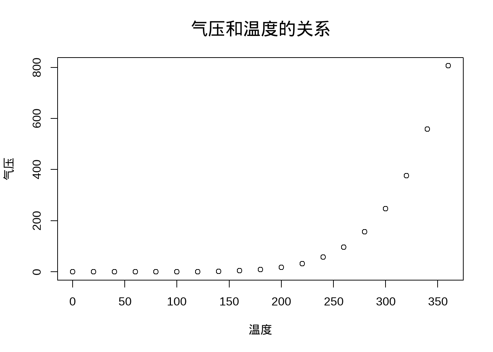
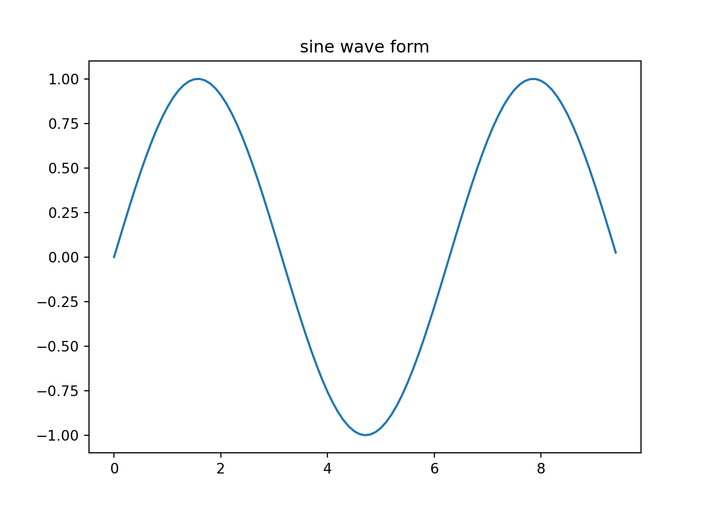

This is an R Markdown document. Markdown is a simple formatting syntax for authoring HTML, PDF, and MS Word documents. For more details on using R Markdown see http://rmarkdown.rstudio.com.
When you click the Knit button a document will be generated that includes both content as well as the output of any embedded R code chunks within the document. You can embed an R code chunk like this:
speed dist
Min. : 4.0 Min. : 2.00
1st Qu.:12.0 1st Qu.: 26.00
Median :15.0 Median : 36.00
Mean :15.4 Mean : 42.98
3rd Qu.:19.0 3rd Qu.: 56.00
Max. :25.0 Max. :120.00 You can also embed plots, for example:

Note that the echo = FALSE parameter was added to the
code chunk to prevent printing of the R code that generated the
plot.
Use
of Library “reticulate”
Yihui-rmarkdown
You can also change the engine interpreters globally for multiple engines, e.g.,
knitr::opts_chunk$set(engine.path = list(
python = '~/anaconda/bin/python',
ruby = '/usr/local/bin/ruby'
))import numpy as np
import matplotlib.pyplot as plt
# 计算正弦曲线上点的 x 和 y 坐标
x = np.arange(0, 3 * np.pi, 0.1)
y = np.sin(x)
plt.title("sine wave form")
# 使用 matplotlib 来绘制点
plt.plot(x, y)
plt.show()
[1] 0.00000000 0.09983342 0.19866933 0.29552021 0.38941834 0.47942554
[7] 0.56464247 0.64421769 0.71735609 0.78332691 0.84147098 0.89120736
[13] 0.93203909 0.96355819 0.98544973 0.99749499 0.99957360 0.99166481
[19] 0.97384763 0.94630009 0.90929743 0.86320937 0.80849640 0.74570521
[25] 0.67546318 0.59847214 0.51550137 0.42737988 0.33498815 0.23924933
[31] 0.14112001 0.04158066 -0.05837414 -0.15774569 -0.25554110 -0.35078323
[37] -0.44252044 -0.52983614 -0.61185789 -0.68776616 -0.75680250 -0.81827711
[43] -0.87157577 -0.91616594 -0.95160207 -0.97753012 -0.99369100 -0.99992326
[49] -0.99616461 -0.98245261 -0.95892427 -0.92581468 -0.88345466 -0.83226744
[55] -0.77276449 -0.70554033 -0.63126664 -0.55068554 -0.46460218 -0.37387666
[61] -0.27941550 -0.18216250 -0.08308940 0.01681390 0.11654920 0.21511999
[67] 0.31154136 0.40484992 0.49411335 0.57843976 0.65698660 0.72896904
[73] 0.79366786 0.85043662 0.89870810 0.93799998 0.96791967 0.98816823
[79] 0.99854335 0.99894134 0.98935825 0.96988981 0.94073056 0.90217183
[85] 0.85459891 0.79848711 0.73439710 0.66296923 0.58491719 0.50102086
[91] 0.41211849 0.31909836 0.22288991 0.12445442 0.02477543 [1] ".git" ".Rhistory" "docs" "helloworld.py"
[5] "index.Rmd" "README.md" "test1.Rmd" "test1_files"
[9] "test2.Rmd" "_site.yml" PS: 在R代码块中执行Python代码时，默认会将Python对象转为R对象。
we can run code between text like this: date: 2024-05-14 date: 最近更新日期为14 五月, 2024
Solution here
Change output: latex_engine and documentclass like this:
title: "中文文档"
documentclass: ctexart
output:
pdf_document:
latex_engine: xelatex在Rmd正文最开始写上
{r setup, include=FALSE}
library(showtext)
showtext_auto()如果不喜欢showtext默认的字体，可以自行添加字体
{r setup, include=FALSE}
library(showtext)
font_add("simsun", regular = "simsun.ttc")
showtext_auto()